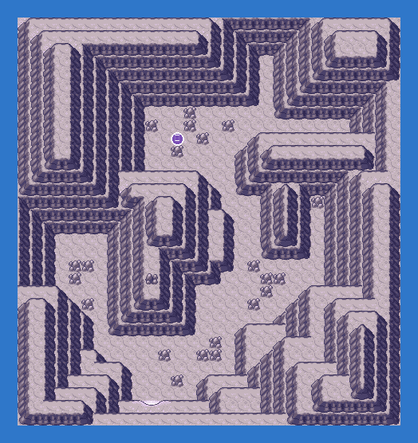

PokémonEMMA'S EMERALD
OFFICIAL Strategy Guide
Meteor Falls Stevens Cave
‹ Meteor Falls B1F 2RQuest: Meteor Falls: the deep rooms (8 badges, LV45–55) · 4 of 4Back to the side quests ›
TIP
Wild Pokémon here are LV33–40. Time of day: M = morning (6–10), D = day (10–19), E = evening (19–20), N = night (20–6).
Event 1: Steven's cave
Opens after the Hall of Fame. Steven challenges you with his full Steel team at level 77+. Giratina (level 70) waits in the same cave.

CAUTION
Steven's team is level 77-78 with Metagross as the ace. Fire and Ground moves; expect Light Screen and Toxic.Trainers
| ARival STEVEN: Skarmory LV77Steel; Claydol LV75GroundPsychic; Aggron LV76SteelRock; Cradily LV76RockGrass; Armaldo LV76RockBug; Metagross LV78SteelPsychic (Sitrus Berry) |
Legendary Pokémon here

Static encounters: walk up and press A. Caught = gone for good; beaten or fled = back next visit.
Catch ’Em All! Grass & caves
 | Golbat: | LV33 | Common | MDEN |
 | Solrock: | LV35 | Common | MDEN |
 | Darmanitan (Galar Zen): | LV35–37 | Uncommon | MDEN |
 | Cryogonal: | LV33–36 | Uncommon | MDEN |
 | Scizor: | LV34–35 | Uncommon | MDEN |
 | Tropius: | LV35–37 | Uncommon | MDEN |
 | Aerodactyl: | LV37 | Uncommon | MDEN |
 | Minior (Meteor Red): | LV37–38 | Uncommon | MDEN |
 | Drampa: | LV36 | Uncommon | MDEN |
 | Archaludon: | LV33–35 | Uncommon | MDEN |
 | Sigilyph: | LV35–36 | Uncommon | MDEN |
 | Amaura: | LV37 | Uncommon | MDEN |
 | Frigibax: | LV37–38 | Uncommon | MDEN |
 | Jynx: | LV37–38 | Uncommon | MDEN |
 | Alolan Sandslash: | LV38–40 | Uncommon | MDEN |
 | Stonjourner: | LV35–37 | Uncommon | MDEN |
 | Dartrix: | LV36–38 | Uncommon | MDEN |
 | Jumpluff: | LV36 | Uncommon | MDEN |
 | Archen: | LV36–37 | Uncommon | MDEN |
 | Galarian Stunfisk: | LV36–38 | Uncommon | MDEN |
 | Noibat: | LV37 | Uncommon | MDEN |
 | Meditite: | LV33–34 | Uncommon | MDEN |
 | Rampardos: | LV38–40 | Uncommon | MDEN |
 | Gigalith: | LV35–36 | Uncommon | MDEN |
 | Corvisquire: | LV36 | Rare | MDEN |
 | Emolga: | LV34–35 | Rare | MDEN |
 | Flamigo: | LV33 | Rare | MDEN |
 | Alolan Golem: | LV35–37 | Rare | MDEN |
 | Xatu: | LV35–37 | Rare | MDEN |
 | Carbink: | LV35 | Rare | MDEN |
 | Lycanroc (Midday): | LV35–37 | Rare | MDEN |
 | Naclstack: | LV38–39 | Rare | MDEN |
 | Staravia: | LV36 | Rare | MDEN |
 | Kilowattrel: | LV36–37 | Rare | MDEN |
 | Skarmory: | LV36–38 | Rare | MDEN |
 | Hawlucha: | LV39–40 | Rare | MDEN |
 | Carkol: | LV36 | Rare | MDEN |
 | Cyclizar: | LV39–40 | Rare | MDEN |
 | Klawf: | LV39 | Rare | MDEN |
 | Shuckle: | LV36 | Rare | MDEN |
‹ Meteor Falls B1F 2RQuest: Meteor Falls: the deep rooms (8 badges, LV45–55) · 4 of 4Back to the side quests ›
140
Side Quests